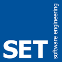
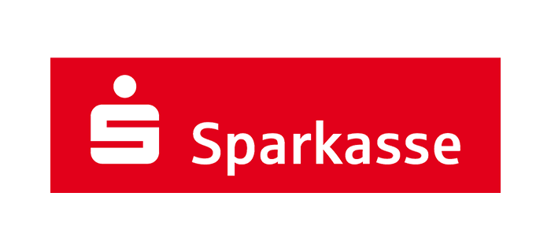

JoiN Systemberatung
Service
Personal Profil
Impressum
Personal Profil Günther Vogt
1978 - 1980
Einstieg in die Informationsverarbeitung (Fa. SIEMENS, Fürth/Erlangen)
Operating,Programmierung,BS2000 Systemverwaltung
1980 - 1985
Systemprogrammierung,
Datenbankadministration (Fa. MBB, Ottobrunn)
Entwicklung eines Arbeitsvorbereitungssystems auf der Basis von ISPF(Dialog Manager) und PL1
Entwicklung eines Übernahmeverfahrens von IMS DB/DC-Komponenten
Organisationsprogrammierung (PL1,IMS DB/DC)
Systemprogrammierung (IMS DB/DC,DBRC,IRLM,TSO/ISPF)
Pflege von Basissoftware (TSO/ISPF,ADF/2,ADABAS,Natural)
Datenbankadministration (IMS/DB,ADABAS)
1985 - 1986
Produktentwicklung (Fa. SOFTWARE ENGINEERING, München)
Entwicklung und Support für folgende Produkte:
OTTO Online Transmission Time Optimizer (Komprimierung von 3270-Datenströmen)
COMPRESS/DL1 (heutige SAP R/2-Komprimierung)
1978 - 1980
Einstieg in die Informationsverarbeitung (Fa. SIEMENS, Fürth/Erlangen)
Operating,Programmierung,BS2000 Systemverwaltung
1978 - 1980
1980 - 1985
Systemprogrammierung,Datenbankadministration (Fa. MBB, Ottobrunn)
Entwicklung eines Arbeitsvorbereitungssystems auf der Basis von ISPF(Dialog Manager) und PL1
Entwicklung eines Übernahmeverfahrens von IMS DB/DC-Komponenten
1980 - 1985
Organisationsprogrammierung (PL1,IMS DB/DC)
Systemprogrammierung (IMS DB/DC,DBRC,IRLM,TSO/ISPF)
Pflege von Basissoftware (TSO/ISPF,ADF/2,ADABAS,Natural)
Datenbankadministration (IMS/DB,ADABAS)
1985 - 1986
Produktentwicklung (Fa. SOFTWARE ENGINEERING, München)
Entwicklung und Support für folgende Produkte:
OTTO Online Transmission Time Optimizer (Komprimierung von 3270-Datenströmen)
COMPRESS/DL1 (heutige SAP R/2-Komprimierung)
1985 - 1986

Fünfunddreißig Jahre Berufserfahrung sind das Fundament unserer Beratungsleistungen
1986 - 1997
×
1986 - 1997
Technologieberatung/Produktentwicklung (Fa. SOFTWARE AG, München/Nürnberg)
Technischer Support
Entwicklung von Interfaces/Exits etc.
Workshops und Seminare beim Kunden
Konzeptentwicklung für die Implementierung von SAG-Produkten in bestehende IT-Umgebungen
Projektleitung technisch orientierter Spezialprojekte
Migration/Bridge-Software
Entwicklung von Schnittstellen
Anbindung von externen Security-Systemen(RACF,ACF2,TOP SECRET)
Implementierung von Client/Server-Applikationen
Produktentwicklung
ADABAS/DL1-Bridge
ADABAS/TOTAL-Bridge
ADABAS SQL Server
Syncronisation VSAM,DL1 mit ADABAS unter CICS(Two Phase Commit/TRUE)
NATURAL Security (Audit)
1997 - 1998
×
1997 - 1998
Bereichsleitung Service/Support(Fa. WILKEN GmbH, Ulm)
Aufbau Helpdesk/Hotline-Support
Portierung von Client-Server-Anwendungen(AS/400,Mainframe)
Konzeption/Realisierung von Installationsverfahren(InstallShield,Wise)
1998 - Heute
×
1998 - Heute
Selbstständiger IT-Berater
Systemprogrammierung OS/390, z/OS(Basis,CICS,MQSeries,DB2)
Produktmigrationen/Y2K(MVS 5.2->OS/390 2.8,CICS 4.1->TS,SAG-Produkte)
Projektgeschäft (Y2K,Euro /Consulting, Entwicklung von QS-Tools)
Konzeption, Realisierung von Schnittstellen(R/3-RFC,MS-Office)
Projektgeschäft(Aufbau eines DWH unter DB2/UDB – Sun Solaris)
Systemprogrammierung z/OS(CICS TS,IMS TM, WebSphere MQ, DB2)
Systemprogrammierung AIX(DB2/UDB, WebSphere MQ, WebSphere Message Broker)
Systemprogrammierung DataPower Appliances(XI50)
Consulting WebSphere MQ(Performance & Programmierung)
Consulting WebSphere Message Broker(Performance & Programmierung)
Consulting DB2 LUW(Performance & Programmierung, JDBC,Data Replication, Connect-Gateways,Performance-Expert, etc.)
Migration Oracle PL/SQL to DB2 LUW
Software Erfahrung Günther Vogt
Programmierung
Programmierung
Problem/Performance Analyse
Problem/Performance Analyse
Administration
Administration
Projekt Erfahrung - Günther Vogt

↑